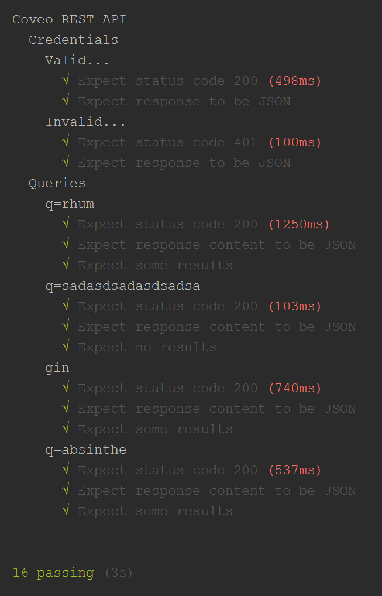

JS Challenge
The goal of this challenge is to build a search interface based on the Coveo REST API. Complete instructions: Coveo Front End Challenge
I've decided to use Angular 2 to take up the challenge. Here's is the final result
What are my goals with this challenge?
Things I expect to learn
Things that I know but that need to be refreshed
Things that seems cool
- Angular Material - Material Design components for Angular 2 apps
- Coveo JavaScript Search Framework
References used to reach my goals
Angular 2
Coveo
Angular Material
JavaScript
Pitfalls / Time consuming isssues
TypeScript
- I had to refresh my general knowledge regarding ES2015.
- I didn't have the reflex to type everything when coding JavaScript.
Angular 2
- Troubles passing values between components (parents, childrens, and siblings).
- I wasn't familiar with the Observer Design Pattern and I had to learn the basics if I wanted to use it over the Promise Pattern.
- I decided to upgrade Angular 2.0.0-rc.7 to Angular 2.0.0 final.
- I found many examples regarding Angular 2 but most them are for previous versions.
- I still have unresolved issues with Routing to pass and use parameters with Coveo REST Search API
Angular Material
- I still have unresolved issues for importing the library.
Coveo REST Search API
- I had troubles moving from a GET to a POST request with Angular 2 and RxJS Observer.
Coveo JavaScript Search Framework
- I had conflicts with my routing and the \q? parameters appended to my URL.
Github
- I am used to work with SVN... configuring WebStorm was not hard but I had unexpected results. I have decided to use GitHub Desktop.
Heroku
- I had issues for packaging my application with package.json (dependencies vs devDependencies)
- Déploiement à partir de GitHub
- I had issues with the port used by lite-server. I had to create the config file /bs-config.js at the root of my project.
module.exports = {
"port": process.env.PORT
};
Unit tests
I've decided to build small unit tests regarding the Coveo REST Search API and my challenge. Here's is the source code
Framework and libraries

Authors and Contributors
Louis-Guillaume Carrier-Bédard (@lgcarrier)